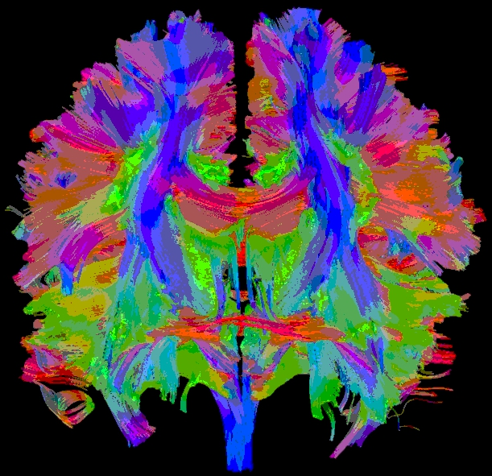
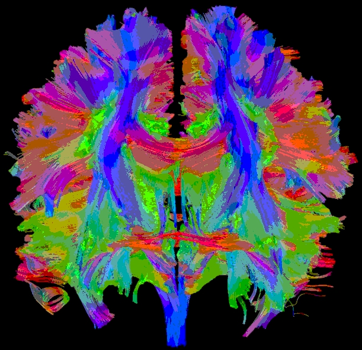

|
Image Processing Suite
|
|
Image Processing Suite
|
The graphical user interface is most useful for anazlying and editing
one or a small number of images. With it you can use all the
tools that come
packaged with the MIA Application to load, edit, and save images. You can
also load images in a directory that are numbered (i.e. a "stack" of images)
and "step" through them one-by-one. However, this can be tedious, and an
automated method to step through and edit many images in a stack is covered
in the command-line section.
In this
section we will go over the steps required to convert and segment a color
brain scan using the GUI interface. These are the before (left) and
after (right) images:
 

C:\Program Files\Image Processing Suite\build\bin\MIA
machine-name:~/Image Processing Suite/buid/bin/MIA.

Controls window
is the Image I/O panel. This panel displays all
the files and folders in the directory that the MIA application starts
up in. Included in your copy of the base application is a directory a
large number of CT scans; this is where our example image above is
from. To get to this directory, double click on resources and then
test-images. You should now be in a directory that looks
like this:
mrbrain-8bit052.png. Load this image
into the canvas by double-clicking it and then clicking
Load Canvas. The MIA window (i.e. the "canvas")
will now display the photo. We can edit this image with the
Tools (far left) and
Filters panel.
Blur fliter
amount of 0.6. This has the effect of reducing any noise in the image.
Then set Quantize to 4 bins and apply. Your image should now match the
"After" image above.
Image
text field to whatever name you wish. Once you change the name,
press enter (or click somewhere outside the text field). Click
Save Canvas to save the image in the current
directory.../ will take you up one
level in the directory, while ./ takes you into the
folder you are already in) and save the image there.
 1.8.11
1.8.11